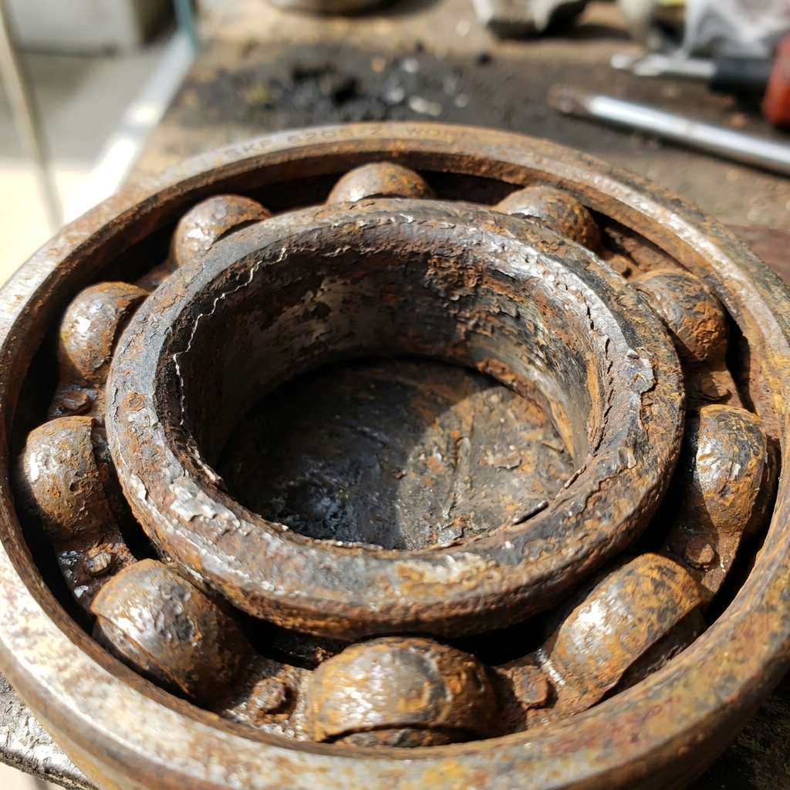
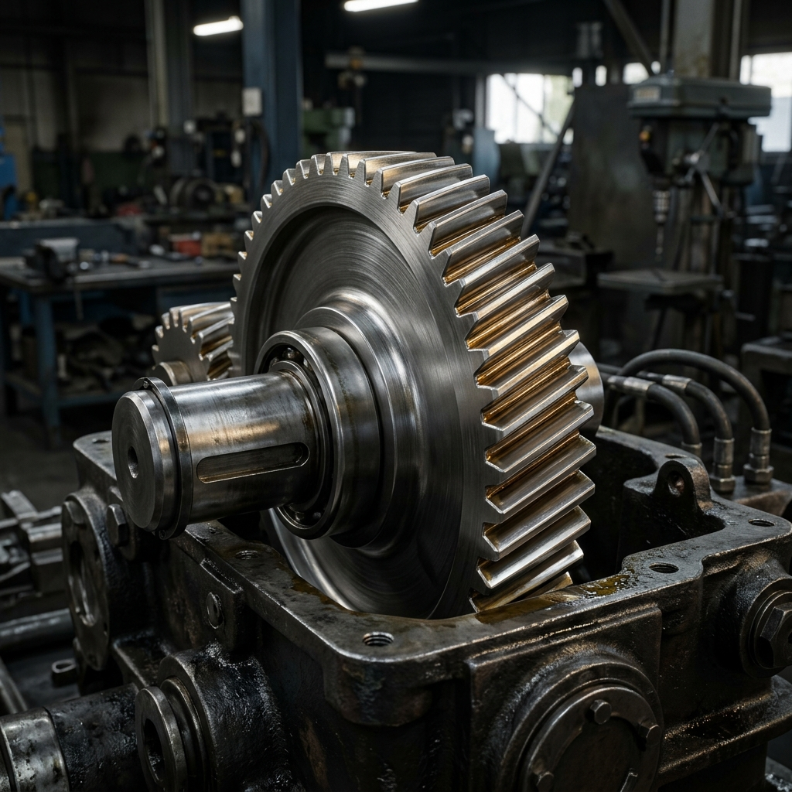

AI-Powered Machine Defect Detection & Maintenance
Optimize factory floor uptime with automated YOLOv8 visual inspections, real-time bounding-box defect mapping, and instant AI-generated maintenance work orders.
Weighted asset inspection safety factor
Completed scans in current cycle
Active component interventions
Average physical replacement turn time
Quick Inspection Selection
Select one of our preset test assets to run a diagnostics scan inside the AI Scan Center.
Drive Gear (Spur)

Main Shaft Bearing

High-Speed Pinion
Recent Inspection Logs
View All| Part | Severity | Timestamp |
|---|
VisionGuard AI System Features
A fully integrated computerized maintenance management system (CMMS) powered by industrial machine learning.
YOLOv8 Object Localization
Runs sub-15ms edge inference to map micro-cracks, surface spalling, pit defects, and corrosion rust borders instantly on raw inspection uploads.
RUL Predictive Analytics
Calculates Remaining Useful Life (RUL) using operating temperature curves, historical failure indexes, and vibration spectral analyses.
Automated Work Orders
Instantly compiles maintenance steps, safety guidelines (Lockout/Tagout), required tools list, and cross-references matching warehouse spares.